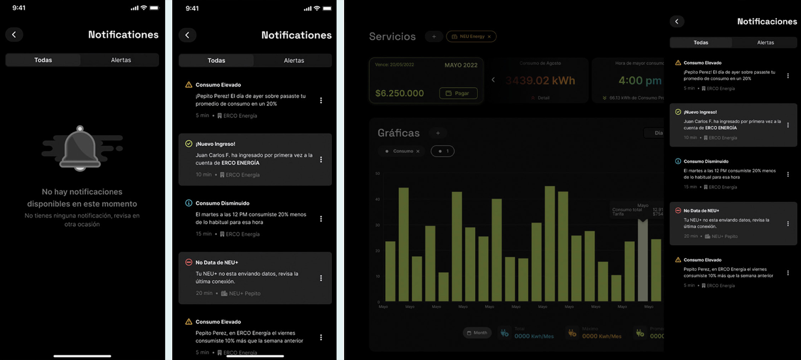
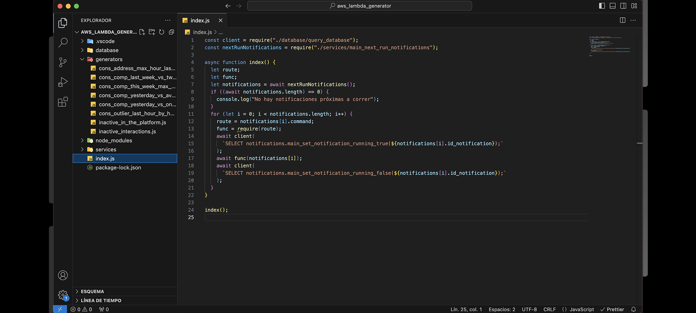
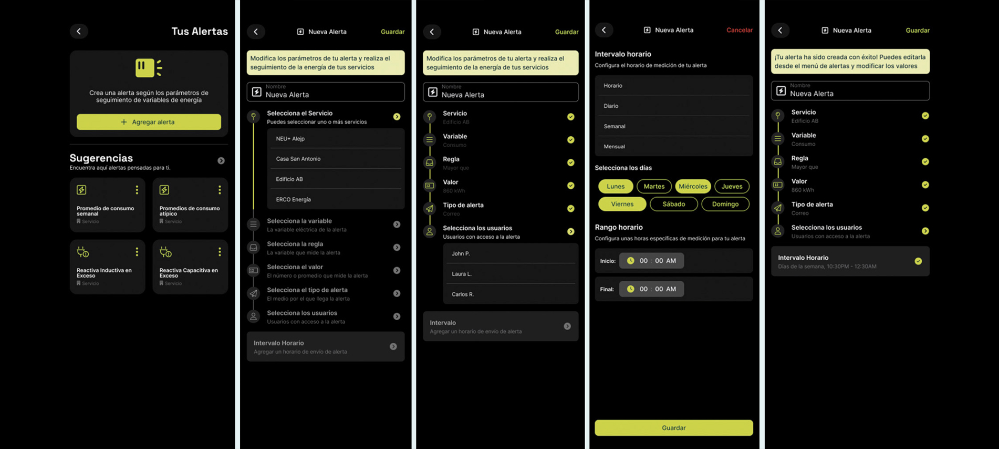
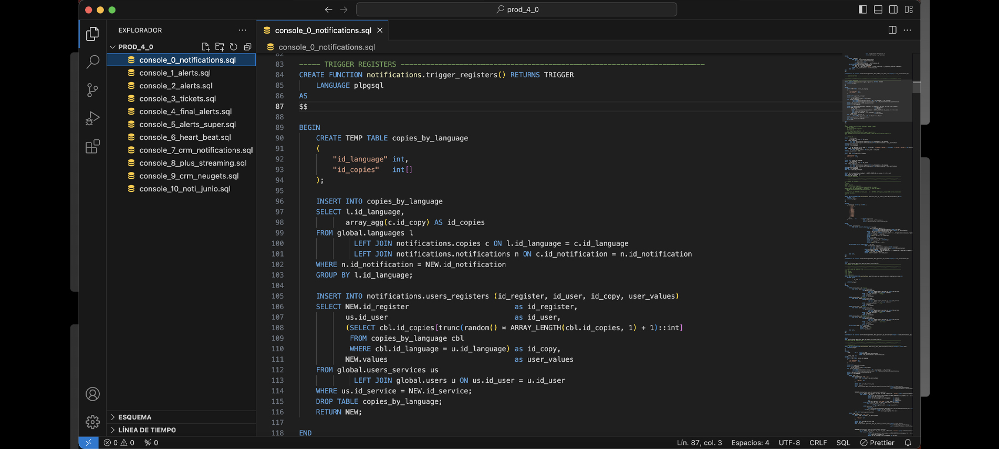

An energy platform that needed to talk to its users.
NEU Energy is a digital energy management startup — their platform lets companies monitor electricity consumption hour by hour, create usage labels, and analyze behavioral patterns. The intelligence of the platform was largely wasted if users weren't being notified when something meaningful happened with their data.
I joined the tech team as a Developer Jr and spent a year and a half working across several projects: building pages for the platform, developing ticket and quotation software in ZohoDesk for customer support and NEU Brasil — and leading the main project, the Notifications and Alerts system.
A notifications engine built and owned end to end.
The existing notifications system had accumulated enough bugs that the decision was made to replace it entirely from scratch. I was put in charge of the full project — from researching the right architecture and tools, to writing and testing the code, to deploying it to production.
The system worked in two parts. The notifications generator ran on a scheduled cadence using AWS CloudWatch, querying the PostgreSQL database with custom SQL per notification type — monthly consumption summaries, unusual spikes, threshold alerts. If a user's data matched the trigger conditions, it passed the event to the second part.
The notifications handler was an AWS Lambda function triggered by a database insertion. It routed the notification to the right channel — NEU app push notification, SMS, or email — based on the user's settings. After delivery, the notification appeared in the platform's notification center.



The notifications system — code and the resulting alerts as seen by users.

Custom SQL queries per notification type — each one targeting specific user data patterns.
I was also involved in the UI side: helping define the design of the notification interface, the parameters that determined when a user should be notified, and the copy for each notification type.